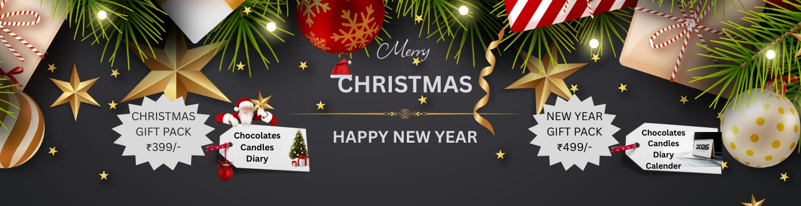

Diwali Corporate Gifting Ideas 2026: Hampers Employees & Clients Will Love
Published: September 5, 2026

Diwali is the single most important gifting season for Indian businesses. It is the moment to thank employees, appreciate clients and strengthen channel partnerships — and a thoughtful corporate Diwali gift does that far better than a generic voucher. This guide covers the best Diwali corporate gifting ideas for 2026, how to choose gifts for employees vs clients, and how to plan bulk festive gifting without last-minute stress.
At Unbox Paradise, we design and deliver customized Diwali hampers and festive gifts in bulk for companies in Pune, Bhopal and across India — with branding, premium packaging and on-time delivery.
Why Diwali Corporate Gifting Matters More Than Ever
Festive gifting is not just a formality. A well-chosen Diwali gift strengthens employee loyalty, improves client retention and keeps your brand visible long after the festival. Employees who feel appreciated are more engaged, and clients who receive a thoughtful hamper remember your company when the next order or renewal comes around.
Diwali gifting also builds employer branding. When an employee takes a premium hamper home, their family sees your brand too — a small detail that creates real goodwill.
12 Corporate Diwali Gifting Ideas for 2026
1. Premium Festive Hampers
A curated hamper with dry fruits, chocolates, diyas and branded merchandise is the classic corporate Diwali gift. Explore our ready-made bundled gift packs or customize the contents to your budget.
2. Personalized Diwali Gift Boxes
Add the recipient's name, a greeting card and your logo to create a gift that feels personal. Personalized boxes work especially well for clients and senior employees.
3. Diwali Gifts for Employees: Everyday-Use Merchandise
Branded drinkware, diaries and stationery and bags get used daily, so your brand stays visible all year.
4. Diwali Gifts for Clients: Premium Desk Gifts
For clients, consider executive desk accessories, premium watches and fancy gifts, or a high-value hamper that reflects the relationship.
5. Custom T-Shirts & Festive Merchandise
Festive-themed custom t-shirts and polos are great for teams, Diwali events and employer-branding drives.
6. Sweets, Dry Fruits & Chocolates
Traditional sweets and dry-fruit assortments remain the most appreciated Diwali gift. Pair them with a branded container for a premium feel.
7. Diwali Gift Combo Packs
Combine sweets, a diya set and branded merchandise into one value pack. Combo packs offer high perceived value at a controlled per-unit cost.
8. Eco-Friendly & Sustainable Gifting
Jute bags, bamboo bottles and plantable stationery make thoughtful, sustainable Diwali gifts that align with your ESG goals.
9. Diwali Gifts for Channel Partners & Dealers
For partners and dealers, gift hampers with a personalized note and premium branding reinforce the partnership.
10. Tech & Gadget Gifts
Power banks, desk accessories and gadget kits are premium, practical Diwali gifts for employees and clients alike.
11. Gift Cards & Vouchers
When you are unsure of individual preferences, gift cards paired with a small branded hamper give flexibility while keeping the festive touch.
12. Fully Customized Diwali Kits
Build a kit around your brand — packaging, inserts, name tags and products. Our gifting services handle everything end to end.
Diwali Gifts for Employees vs Clients: What to Choose
Employees value gifts they can use — branded merchandise, sweets and practical items. Clients and partners usually expect a more premium, presentation-focused gift. Segment your list and set a clear per-unit budget for each group before you finalize designs.
How to Plan Bulk Diwali Gifting
- Finalize your recipient list and quantities early.
- Set a per-unit budget and a total gifting budget.
- Confirm branding, packaging and personalized inserts.
- Place orders 2–3 weeks before Diwali to allow production and delivery.
- Plan for multi-city delivery if your team is distributed.
Where to Buy Corporate Diwali Gifts
Unbox Paradise supplies bulk Diwali gifts for corporates in Pune and Bhopal, with PAN-India delivery. Browse our product catalog or request a quote for a customized Diwali gifting proposal.
Final Thoughts
Great Diwali corporate gifting is about relevance, quality and timing. Choose gifts that fit the recipient, present them beautifully, and deliver on schedule — and your brand will be remembered long after the festival. Start early, and make this Diwali count.